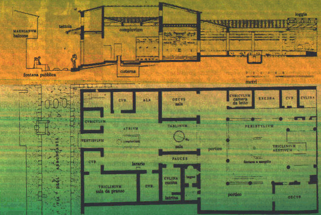
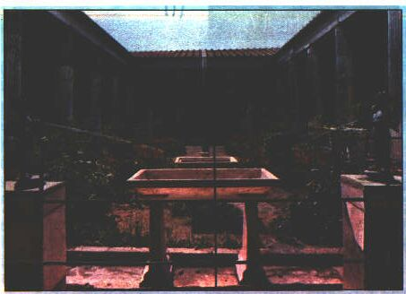

DOMUS= casa di epoca romana
La domus ariminense, come del resto la domus dell'Italia Cisalpina, resta sconosciuta :non ce ne è nota con qualche accuratezza, nè la tipologia, nè le parti componenti, nè le dimensioni.
Neppure abbiamo un'idea della tessitura edilizia, o del numero delle domus per isolatoche ,sulla base di analogie potrebbero essere stimate da quattro a sei.
I benestanti della classe dirigente locale dispongono generalmente di case piuttosto ampie, i cui ambienti di soggiorno si collocano, almeno originariamente, intorno ad un vano scoperto, l'atrio, che da' a questo tipo di costruzione il nome generico di case "ad atrio"

